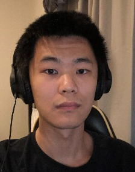

BarcodeBERT: transformers for biodiversity analyses
Bioinformatics Advances, 6(1):vbag054, 2026
Simon Fraser University
I am a PhD student in Computing Science at Simon Fraser University, supervised by Angel Xuan Chang. I am part of the 3D Language and Generation (3DLG) group and GrUVi.
My research focuses on multimodal learning for biodiversity. I also work on grounding natural language in 3D scenes.
I completed my MSc and undergraduate studies in Computing Science at SFU.

I study representations that connect insect images with DNA barcodes and taxonomic descriptions. My work includes contrastive learning across these modalities and hyperbolic representations of biological taxonomies.
In 3D vision and language, I work on identifying objects in scenes from text descriptions, including descriptions that refer to multiple objects.
Bioinformatics Advances, 6(1):vbag054, 2026
Beyond Euclidean Workshop at ICCV 2025; Imageomics and FM4LS workshops at NeurIPS 2025
ACL 2025
ICLR 2025
NeurIPS 2024, Datasets and Benchmarks Track
ICCV 2023
NeurIPS 2023, Datasets and Benchmarks Track
* Equal contribution.
School of Computing Science · Simon Fraser University